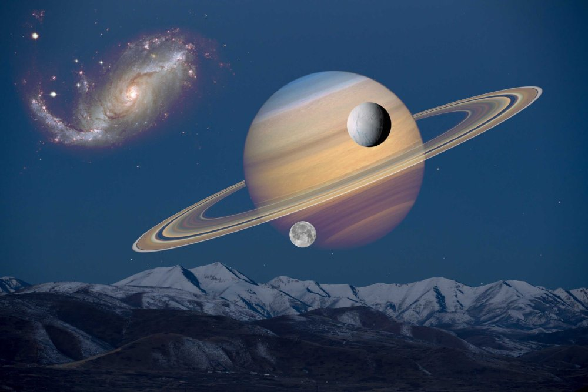
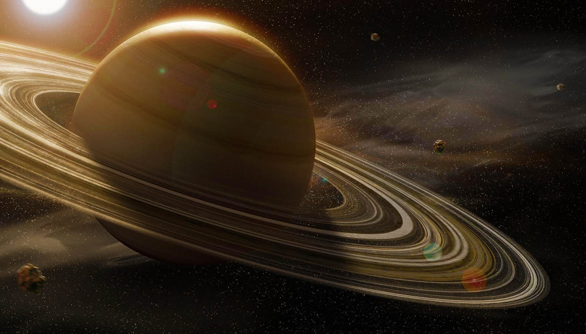

Сатурн
Сатурн - шоста планета за віддаленістю від Сонця і друга за розмірами планета в Сонячній системі після Юпітера. Сатурн класифікується як газова планета-гігант. Сатурн названо на честь римського бога землеробства.

В основному Сатурн складається з водню, з домішками гелію та слідами води, метану, аміаку та важких елементів. Внутрішня область є відносно невеликим ядром із заліза, нікелю і льоду, покрите тонким шаром металевого водню і газоподібним зовнішнім шаром. Зовнішня атмосфера планети здається з космосу спокійною та однорідною, хоча іноді на ній з'являються довготривалі утворення. Швидкість вітру на Сатурні може досягати місцями 1800 км/год, що значно більше, ніж Юпітері. Сатурн має планетарне магнітне поле, що займає проміжне положення по напруженості між магнітним полем Землі і потужним полем Юпітера. Магнітне поле Сатурна тягнеться на 1 000 000 кілометрів у напрямку Сонця. Ударна хвиля була зафіксована «Вояджером-1» на відстані 26,2 радіуса Сатурна від самої планети, магнітопауза розташована на відстані 22,9 радіуса.
Сатурн має помітну систему кілець, що складається головним чином з частинок льоду, меншої кількості важких елементів і пилу. Навколо планети звертається 146 відомих зараз супутника. Титан - найбільший з них, а також другий за розмірами супутник у Сонячній системі (після супутника Юпітера, Ганімеда), який перевершує за своїми розмірами Меркурій і володіє єдиною серед супутників планет Сонячної системи щільною атмосферою, а також метановими морями та озерами.
Астрономічні характеристики
Середня відстань між Сатурном та Сонцем становить 1430 млн км (9,58 а.о.). Рухаючись із середньою швидкістю 9,69 км/с, Сатурн звертається навколо Сонця за 10759 діб (приблизно 29,5 років). Відстань від Сатурна до Землі змінюється в межах від 1195 (8,0 а.о.) до 1660 (11,1 а.е.) млн км, середня відстань під час їхнього протистояння близько 1280 млн км. Сатурн та Юпітер перебувають майже в точному резонансі 2:5. Оскільки ексцентриситет орбіти Сатурна 0,056, то різниця відстані до Сонця в перигелії та афелії становить 162 млн км.
Теорія виникнення
Походження Сатурна (як і Юпітера) пояснюють дві основні гіпотези. Згідно з гіпотезою «контракції», схожість складу Сатурна із Сонцем у тому, що у обох небесних тіл є велика частка водню, і, як наслідок, малу щільність можна пояснити тим, що в процесі формування планет на ранніх стадіях розвитку Сонячної системи у газопиловому диску утворилися потужні «згущення», що дали початок планетам, тобто Сонце і планети формувалися таким чином. Тим не менш, ця гіпотеза не може пояснити відмінності складу Сатурна та Сонця.

Дослідження Сатурну
Спочатку сприйнятий як три окремих об'єкти через телескоп Галілея на початку XVII століття, Сатурн пізніше був розкритий як планета з кільцями завдяки дослідженням Християна Гюйгенса у 1659 році. У наступні роки вчені виявили багато супутників цієї гігантської газової планети. Серед них — найбільший Титан, який був відкритий Гюйгенсом. Кассіні також зробив свій внесок у вивчення Сатурна та його оточення.

Кільця Сатурну
Сьогодні відомо, що у всіх чотирьох газових гігантів є кільця, але у Сатурна вони найпомітніші. Кільця розташовані під кутом приблизно 28 ° до площини екліптики. Тому із Землі залежно від взаємного розташування планет вони виглядають по-різному, змінюється їх так зване «розкриття» — від максимального, коли видно всю їх ширину в площині, до мінімальної, дуже тонкої смужки, коли ця площина видно «з ребра». Як припускав ще Гюйгенс, кільця не є суцільним твердим тілом, а складаються з мільярдів найдрібніших частинок, що знаходяться на навколопланетній орбіті. Це було доведено спектрометричними спостереженнями А. А. Білопольс